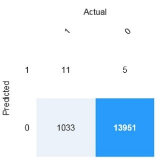

1.Which following are example of data transformation module available in azure machine learning designer?
2.You are using Azure Machine Learning to develop a machine learning model to predict fuel efficiency (miles/gallon) for automobiles manufactured between 2000 and 2010. Which machine learning algorithm would be the best choice for building this model?
3.Data value that inflence the prediction of model is called------
4.You are working on an application that uses computer vision to identify unwanted plant species growing alongside crops in farmer's fields. Which Azure Cognitive Service is the best choice to help you train your image classification model?
4.You have been given a data set that is unlabeled and includes detailed customer information. You would like to use Azure Machine Learning to uncover data patterns and groupings. Which machine learning algorithm is the best choice?
7.You are writing an application that analyzes customer product reviews and flags reviews that have a negative sentine, or Meit Azure Cognitive Service would you use to provide sentiment analysis and mark text as positive,
8.Which of the following Azure Cognitive Services can be integrated with Azure Bot Services as the engine that recognizes user intent to create an interactive chatbot application?
9. Find true positive?
10.Which of the following statement belong to classification?
11.What key piece of information do you need to call your QnA Maker service from a client application??
12:When training a model, why should you randomly split the rows into separate subsets?
13.Which of the following features are supported by the Azure Text Analytics API? (Choose 2 answers)?
14.Your company wants to build a recycling machine for bottles. The recycling machine must automatically identify bottles of the correct shape and reject all other items. Which type of Al workload should the company use?
15:You are processing photos of runners in a race. You need to read the numbers on the runners' shirts to identity the runners in the photos. Which type of computer vision should you use?
16:You need to determine the location of cars in an image so that you can estimate the distance between the cars. Which type of computer vision should you use?
17:I give two statement show which type belong to which category? 1.Does this person look like other people.2.Who is this person in this group of people.
18. Which of the following features are supported by the Azure Text Analytics services?
19:Which task should you include to ensure that the service meets the Microsoft transparency principle for responsible Al?
20:Automated machine learning works by running mutiple training iterations that are scored and ranked by the metrics you specity?
21:You need to create a training dataset and validation dataset from an existing dataset. Which module in the Azure Machine Learning designer should you use?
22.You have a database that contains a list of employees and their photos. You are tagging new photos of the employees. Select two statement which belong to above situation.
23:While presenting at a conference, your session is transcribed into subtities for the audience. This is an example of?
24.Which of the following statement belong to natural language processing.
25:Which of the following Azure Cognitive Services would you choose to help build a conversational client application using artificial intelligence to answer customer questions?
26:Which tasks that can be performed by using the Computer Vision service?
27:In which scenarios can you use in the Form Recognizer.
28:You are building a knowledge base by using QnA Maker. Which file format can you use to populate the knowledge base?
29:Which statement belong to generative AI.
30:Identify the first stage of planning responsible API?
31:You need to make the written press releases of your company available in a range of languages. Which service should you use?
32:You are authoring a Language Understanding (LUIS) application to support a music festival. You want users to be able to ask questions about scheduled shows, such as: `Which act is playing on the main stage?` The question `Which act is playing on the main stage?` is an example of which type of element?
33:Which scenario is an example of a webchat bot?
34:You have a natural language processing (NLP) model that was created by using data obtained without permission. Which Microsoft principle for responsible AI does this breach?
35:You plan to deploy an Azure Machine Learning model by using the Machine Learning designer. Which four actions should you perform in sequence? choose correct order.